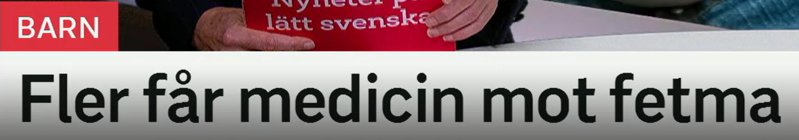
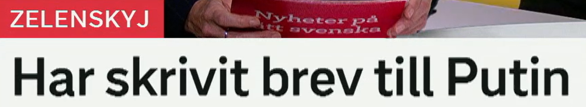
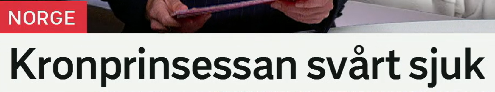
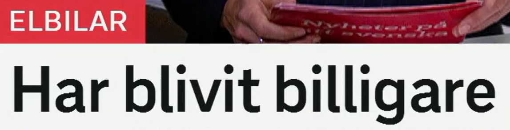
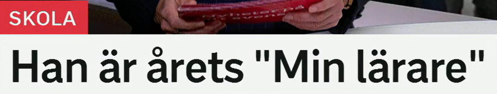

Fler får medicin mot fetma
更多人获得治疗肥胖的药物。
fler 表示“更多的”，用于可数名词。对比 mer，常用于不可数或程度。
近义表达：allt fler 越来越多，ett större antal 更多数量，flera 若干/多个。
Fler barn får hjälp i vården. 更多儿童在医疗系统中获得帮助。
få medicin = 获得/服用药物。medicin 可以指药，也可以指医学。
相关词：läkemedel 药品，behandling 治疗，recept 处方，dos 剂量。
Patienten får medicin varje dag. 病人每天服药。
mot 在医疗语境中常表示“针对、对抗”。fetma 肥胖症。
相关词：övervikt 超重，vikt 体重，viktminskning 减重，livsstil 生活方式。
Det finns ny behandling mot fetma. 有治疗肥胖的新疗法。
医疗句型
få medicin mot X = 获得针对 X 的药物。也可说 behandling mot X。

Har skrivit brev till Putin
已经给普京写了信。
原形 skriva 写；完成式 har skrivit 表示“已经写了”。
相关表达：skicka brev 寄信，skriva till någon 写信给某人，meddela 通知。
Hon har skrivit ett långt mejl. 她写了一封长邮件。
ett brev 信。现代语境也常见 mejl 邮件、meddelande 消息。
近义/相关词：mejl 邮件，meddelande 信息，skrivelse 公文/书面请求。
Presidenten skickade ett brev. 总统寄出一封信。
brev till Putin = 给普京的信。till 表示对象或方向。
Han skrev till regeringen. 他写信给政府。
标题省略
标题省略主语，完整可写：Zelenskyj har skrivit brev till Putin.

Kronprinsessan svårt sjuk
王储妃病重。
en kronprinsessa 王储妃/女王储；定形 kronprinsessan。
相关词：kungafamiljen 王室，kronprins 王储，prinsessa 公主，drottning 王后/女王。
Kronprinsessan deltar inte i mötet. 王储妃不参加会议。
sjuk 生病的；svårt sjuk 表示病重。svårt 在这里修饰形容词。
近义表达：allvarligt sjuk 重病，mycket sjuk 病得很重，kritiskt tillstånd 危急状态。
Patienten är svårt sjuk. 病人病情严重。
状态标题
X svårt sjuk 省略 är：Kronprinsessan är svårt sjuk.

Har blivit billigare
已经变便宜了。
bli 变成；har blivit 已经变得。新闻中常用于价格、天气、局势变化。
相关表达：har gått ner 已下降，har minskat 已减少，har sjunkit 已下跌。
Priserna har blivit lägre. 价格变低了。
来自 billig 便宜的；billigare 更便宜。反义：dyrare 更贵。
近义表达：lägre pris 更低价格，prisfall 价格下跌，rabatt 折扣。
Elbilar har blivit billigare i år. 电动车今年变便宜了。
en elbil 电动车。相关词：batteri 电池，laddning 充电，räckvidd 续航。
Många vill köpa elbil. 很多人想买电动车。
价格变化
X har blivit billigare = X 已变便宜。也可说 priset har sjunkit。

Han är årets "Min lärare"
他是今年的“我的老师”获奖者。
årets = 今年的、年度的。常见：årets lärare 年度教师，årets artist 年度艺人。
相关表达：i år 今年，årlig 年度的，pris 奖项。
Hon blev årets chef. 她成为年度经理。
en lärare 老师；复数同形可为 lärare。相关：elev 学生，undervisa 教授，lektion 课。
近义/相关词：pedagog 教育工作者，handledare 导师，mentor 导师。
Läraren hjälper eleverna. 老师帮助学生。
奖项标题
Han är årets X = 他是今年的 X。适合用于奖项、称号和年度人物。
复习表：重点词 + 近义词 + 高频用法
| 关键词 | 近义/相关词 | 高频搭配 |
|---|---|---|
| medicin | läkemedel, behandling, recept, dos | få medicin, medicin mot fetma, skriva ut medicin |
| skriva | skicka, meddela, formulera, skriva till | har skrivit brev, skriva mejl, skriva under |
| sjuk | allvarligt sjuk, svårt sjuk, frisk, vård | är sjuk, svårt sjuk, bli sjuk |
| billig | billigare, prisfall, rabatt, lägre pris | har blivit billigare, billigare än, priset sjunker |
| årets | årlig, i år, pris, utmärkelse | årets lärare, årets artist, årets vinnare |
练习 1
说“更多儿童获得药物”。提示：Fler barn får medicin.
练习 2
把“她已经写了一封信”译成瑞典语。提示：Hon har skrivit ett brev.
练习 3
说“电动车变便宜了”。提示：Elbilar har blivit billigare.
练习 4
把“年度教师”译成瑞典语。提示：årets lärare